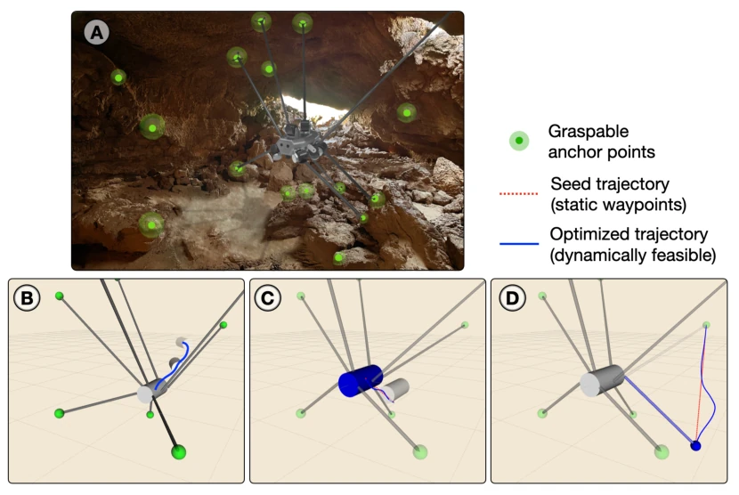
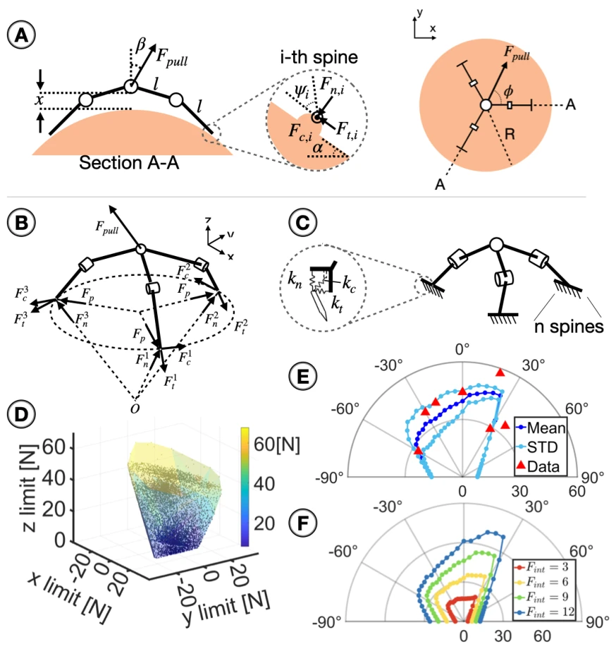
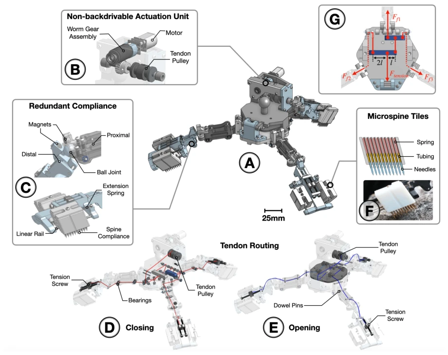
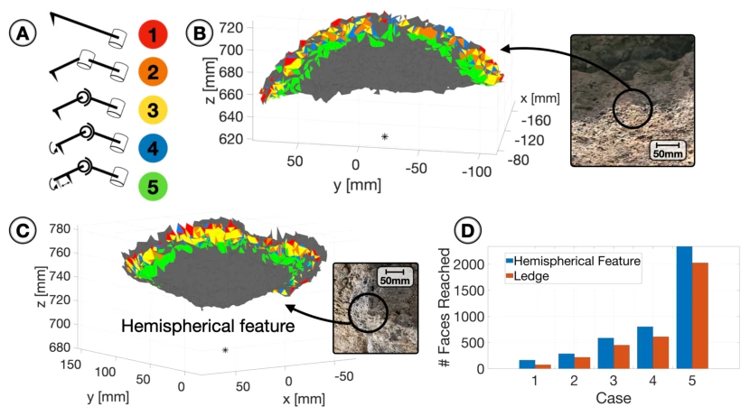
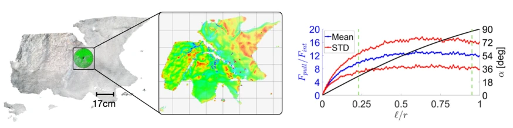

Figure 1: ReachBot exploring an analog martian lava tube. (A) shows a rendering of a full ReachBot configuration overlaid on our field test site in the Lavic Lake volcanic field in the Mojave Desert. (B) shows the single-boom prototype in the same lava tube to demonstrate deployer, perception system, and microspine gripper, which can be seen grasping from another perspective in (C).
Figure 2: Visualization of ReachBot’s kinematic workspace. (A) Each shoulder joint has a pan, θ, and tilt, ϕ, range of motion in addition to a prismatic boom with extension b. The model treats boom deployers as points, with their mass incorporated into the mass of the robot body. A free-body diagram for ReachBot’s body (B) includes the actuated pan moment Mpan, tilt moment Mtilt, and prismatic force Fprismatic along the boom, as well as a reaction force Freaction in the plane perpendicular to Fprismatic, at each shoulder joint. There is no moment about the boom due to the free wrist. Gravity (Fgravity,body = mbodyG) acts at the center of mass. When a gripper is attached, it supports its own weight, but when detached, the shoulder joint must support it. The free-body diagram for an unattach

Figure 3: Motion planning simulation based on a lava tube. (A) shows a rendering of ReachBot in a lava tube near Mojave, CA with graspable anchor points identified with green highlighting. (B) shows a sequence of body positions corresponding to vertices in the footstep plan graph. (C) shows a body motion during which all eight grippers remain attached. (D) shows an end effector motion in which a gripper is detached and reattached at a new location. In each continuous phase, the seed trajectory (sequence of static waypoints) is shown as a dotted red line. The dynamically feasible optimized trajectory is shown as a solid blue curve.

Figure 4: Grasp model and analysis. (A) Geometric parameters for three-finger grasp model.(B) Free body diagram and contact forces. (C) Compliant spine-asperity contact. (D) A 3D limit surface generated from a Monte Carlo simulation with 10,000 samples using param- eters derived during the field test; force components are with respect to (x, y, z) coordinates in (B), in a frame centered at the wrist. (E) Cross-section polar plot of the magnitude of applied pull force, Fpull, using parameters from field test, with (−90◦≤β ≤90◦), where β is the pull angle, and assuming 20 spines engaged (25%). Slight asymmetry in α arises from asymmetry in the rock. Straight sides correspond to failure associated with a finger lifting off. Red triangles mark field test results. Additional details are provide

Figure 5: Mechanical gripper design. (A) Opening and closing tendons are driven by a single gearmotor and drum (B). Proximal/distal phalanges are connected by ball joints, with permanent magnets to hold them in place when the hand is open (C). The opening and closing tendons respectively are illustrated in (D) and (E). Linearly constrained spines (F) are arranged in compact arrays on carriages that float with respect to the fingertips. Additional details are provided in Supplementary Methods.

Figure 6: Reachability analysis of different gripper configurations. (A) on representative lava rocks presenting hemispherical (B) and ledge (C) surface patches scanned and meshed at ≈0.1 mm resolution (insets shows actual surface). Red: In the first case, there is one phalange with the spine fixed at the end. Orange: In the second case, there are two phalanges connected with a revolute joint. Yellow: In the third case, there are two phalanges connected with a ball joint. Blue: The fourth case is the same as the third case with the spine able to rotate with respect to the distal phalange. Green: The fifth case is the same as the fourth case with the spine having up to 10 mm tangential and normal linear travel with respect to distal phalange. On meshed surfaces, each colored region depicts

Figure 7: Two-stage perception and detection of suitable grasp sites. (A) From a stowed position away from the rock wall, raw camera depth data is processed to identify a promising region, with roughly spherical features. Inset shows an image of the deployer in a stowed position collecting data from a rock wall. (B) The boom is deployed for a closer scan, from which a local α angle heat map is generated. Red surfaces are nearly flat at the scale of the gripper; green regions correspond to a range of values αmin < α < αmax, where α is the local surface normal in the vicinity of the asperity, that are likely to yield strong grasps. (C) Shows a plot for β = 0, where β is the pull-off angle, of the computed ratio of pull-off force to grasp force for different ℓ/r values, where ℓ/r is the ratio
Figure 8: Field test demonstrations at a lava tube in the Mojave Desert. (A) gripper de- ployed at end of boom after identifying a target. (B-D) Locally spherical rock features (E-G) locally cylindrical features. In images (B-G) boom is removed for pull tests with force gauge.